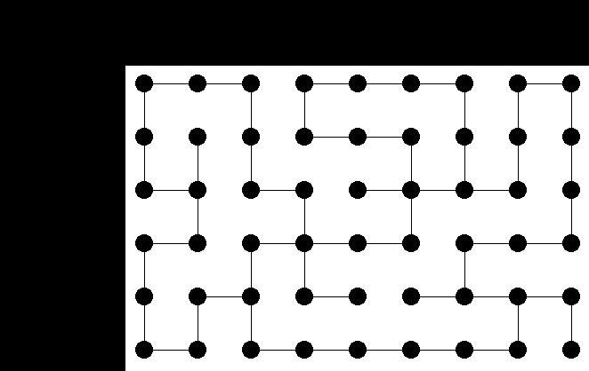
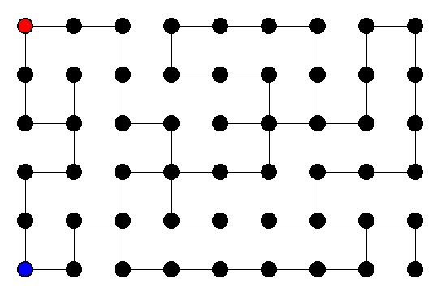

This week we will be helping Heros Inc., develop and test some inventions for escaping the Minotaur in a Labyrinth. The problem is that the Minotaur knows his dungeon well and always takes the shortest path to the adventurer. On the plus side the millennia have caught up to the beast so most adventurers can keep pace with him. In order to test some inventions, we are only going to simulate the labyrinth with a graph (a mutually recursive data structure that is used in many applications), and we can simulate certain characteristics of the adventurer by the way she picks her next step. For example, a poor unequipped adventurer might have to resort to picking the next step in a completely random way, whereas the smart adventurer with the Sight-o-Matic (© Heros Inc.) will know the next step to on the shortest path to the exit.
A graph is a data structure that consists of a set of nodes, and a set of edges where an edge is a pair of nodes. While there are many ways to represent a graph, one common way is to keep a list of nodes, where each node is a name and a list of names of neighbors, that is a list of the names of nodes that are in the same edge pairs. For example, the graph on the right is a 6 node graph with the nodes as the set {1,2,3,4,5,6} and the edges {(1,2),(1,5),(2,3),(2,5),(3,4),(4,5),(4,6)}. Thus the node associated with 1 might be ('node 1 (2 5)).
For the Labyrinth, we will represent every intersection as a node and the edges as the possible paths leading away from the node. It is important to make sure that all your nodes are connected, that is every node is reachable from every other node by following the edges, or else there will be parts of your Labyrinth that are unreachable. Design the appropriate data types and create the following functions so that the shortest path algorithms that I wrote for you will work correctly:
;;Contract: make-graph-from-edgelist: list-of-edges -> graph ;;Purpose: given an edgelist it will produce the appropriate nodes ;; and return a graph with those nodes. ;;Contract: graph-nodelist: graph -> list-of-nodes ;;Purpose: given a graph it produces a list of nodes. ;;Contract: graph-node: name graph -> node ;;Purpose: given the name of a node and a graph ;; it returns the appropriate node ;;Contract: node-name: node -> name ;;Purpose: given a node, it returns a name (which can be any type) ;;Contract: node-neighbors: node -> list-of-node-names ;;Purpose: given a node, it returns the list of neighboring nodes names.You can have whatever helper functions you want. To test your building your graph, you can use my test cases. Here I provide some code that will give draw your graph, you will need to load the draw.ss teachpack to use it.
(define maze (make-graph-from-edgelist '((0 1) (0 9) (1 2) (2 11) (3 12) (3 4)
(4 5) (5 6) (6 15) (7 16) (7 8) (8 17)
(10 19) (11 20) (12 13) (13 14) (14 23)
(15 24) (16 25) (17 26) (18 19) (19 28)
(20 21) (21 30) (22 23) (23 32) (23 24)
(24 25) (26 35) (27 36) (27 28) (29 38)
(29 30) (30 39) (30 31) (31 32) (33 42)
(33 34) (34 35) (36 45) (37 46) (37 38)
(38 47) (39 40) (41 42) (43 52) (43 44)
(44 53) (45 46) (47 48) (48 49) (49 50)
(50 51) (51 52) (9 18) (42 43)))
(define (nname->posn num x_num)
(let ((space (quotient 600 (+ 1 x_num))))
(make-posn (+ (* space (remainder num x_num)) space)
(+ (* space (quotient num x_num)) space)))))
(define (draw-maze maze x_num)
(for-each
(lambda (a)
(for-each (lambda (b) (draw-solid-line (nname->posn (node-name a) x_num)
(nname->posn (node-name (graph-node b maze)) x_num)
'black))
(node-neighbors a)))
(graph-nodelist maze))
(for-each (lambda (a) (draw-solid-disk (nname->posn (node-name a) x_num) 10 'black))
(graph-nodelist maze)))
---------------------------------------------
>(start 600 600)
#t
>(draw-maze maze 9)
>(stop)
#t

In this graph node 0 is in the top left hand corner and the nodes are named 0 - 53 from left to right. Feel free to make several other mazes, I suggest writing them on paper then transferring the edgelists to the screen.
On the way to building the simulation we will need to get the shortest path from the Minotaur's location to the adventurer's location. To do this we use Dijkstra's Algorithm. Dijkstra's Algorithm takes a graph and a node then computes the shortest path from that node to every other connected node in the graph. It keeps two data structures a parent table and a distance table. The parent table give the node that immediately preceded that node on the shortest path traversal of the graph. What my code will return is a list of pairs with the first of each pair the name of the node, and the second of the pair as the next step to on the shortest path to the source. So to find the next step for the Minotaur you can just input the position of the adventurer, find the Minotaur's position in the returned list as a first in the pair and the second in the pair is the next step.
For now you can use the code below, but you might take some time later to understand what is going on, it is an important algorithm that you will see later. (For those who actually do look, I am cheating a bit here by sorting with every iteration instead of maintaining a priority queue, but for small n, O(n2) is about the same as O(n*log(n)).)
;;;;;;;;;;;;;;;;;;;;;;;;;;;;;;;;;;;;;;;;;;;;;;;;;;;;;
;; Dijkstra's Algorithm ;;
;;;;;;;;;;;;;;;;;;;;;;;;;;;;;;;;;;;;;;;;;;;;;;;;;;;;;
;; Contract: graph node -> list
;; Purpose: given a graph and a node it returns the minimum spanning tree of
;; the graph with the node as the source in the form of node , parent pairs
(define (Dijkstra graph begin)
;; A table structure for setting up previous and distance tables
(define (build-table graph fill)
(foldr (lambda (a b) (cons (cons (node-name a) fill) b)) '() (graph-nodelist graph)))
;; A accessor for the table
(define (table-ref nname table)
(let ((ref (filter (lambda (a) (equal? (car a) nname)) table)))
(if (null? ref) (error "table-ref: name not in table arguments --" nname table)
(car ref))))
;; Set up tables previous fill with 'null and distance with infinity (or effectively infinity)
(let* ((previous-table (build-table graph 'null))
(distance-table (build-table graph 1000000)))
;;The iteration is based on a queue, when the queue is empty the work is done
(define (iter done queue)
(if (null? queue) previous-table
;;Find the next item in the queue to process (that is the one with the
;; smallest distance)
(let ((sorted-q (sort queue (lambda (a b) (< (cdr (table-ref a distance-table))
(cdr (table-ref b distance-table)))))))
(process (car sorted-q) done (cdr sorted-q)))))
;;To process a node we are going to check to update its neighbors, then if necessary add them to
;; the queue, and finally add the node to the done list
(define (process nname done queue)
(let* ((min-dist (+ (cdr (table-ref nname distance-table)) 1))
(neighbors (node-neighbors (graph-node nname graph)))
(update-list (filter (lambda (a) (> (cdr (table-ref a distance-table)) min-dist))
neighbors))
(add-to-queue (filter (lambda (a) (not (member? a done))) neighbors)))
(for-each (lambda (a) (set-cdr! (table-ref a distance-table) min-dist)) update-list)
(for-each (lambda (a) (set-cdr! (table-ref a previous-table) nname)) update-list)
(iter (cons nname done) (union add-to-queue queue))))
;; Set the source node's distance to zero
(set-cdr! (table-ref begin distance-table) 0)
;; Start the iteration with the source node in the queue
(iter '() (list begin))))
;;;;;;;;;;;;;;;;;;;;;;;;;;;;;;;;;;;;;;;;;;;;;;;;;;;;;
;; List Operations ;;
;;;;;;;;;;;;;;;;;;;;;;;;;;;;;;;;;;;;;;;;;;;;;;;;;;;;;
(define (member? element list)
(cond [(null? list) #f]
[(equal? (car list) element) #t]
[else (member? element (cdr list))]))
(define (union list1 list2)
(cond [(null? list1) list2]
[(null? list2) list1]
[else (if (member? (car list2) list1) (union list1 (cdr list2))
(union (cons (car list2) list1) (cdr list2)))]))
Now we have our maze we are ready to make our simulation. You will need to create a function that will take a maze, the starting point of the Minotaur, the starting point of the adventurer,and an adventurer strategy. The function can be an iteration where in each iteration you test to see if the adventurer has won (or gotten to the exit, which I just set to be the 0 node) or if the Minotaur has won (i.e. the two crossed paths) otherwise you see update the positions of the two and iterate again. At first you will want to print out the positions (or continue to part III) so that you can make sure your functions are working.
The adventurer strategy should take some inputs (you decide) and output the next node that the adventurer advances too. Since the Minotaur always goes straight for the player, you don't need to input a strategy for him, just implement it from Dijkstra's Algorithm. You should make at least four strategies for the adventurer. Such as the random-neighbor where you pick a random neighbor and advance, the Sight-O-Matic where the adventurer goes straight for the exit, or Torch where you are able to see if the Minotaur is one of the neighboring nodes. Be creative, remember you want the most successful strategy.
To test out your strategies, create a function that will call the simulation with a large number of trials (100 or so) and different positions for the Minotaur and adventurer. Keep track of who wins and report at the end.
In order to sell the products, Heros Inc. would really like some visuals to convince their buyers. Nothing like a bit of gore and blood to show someone how far a little prevention will take them.
For extra credit, make another game function similar to the one in part II, but on each iteration using the draw.ss teachpack make an animation of the simulation. Basically you will use start to open a canvas, stop to close a canvas, sleep-for-a-while to wait so the user can see the new drawing before iterating again, and the various draw-... and clear-... operations to clear the old positions and draw the new ones. Check out the Help Desk for more details and just play around with it to get the hang of it. Right now we are basically stuck with representing the Minotaur as basic shapes, which is fine, we can include the blood and gore in v2 of the simulator. Below is my example, red is the Minotaur and blue is the adventurer.
Add appropriate test cases to the end of your file as usual. Save the definitions window as (your_cnet_id)-Lab08.scm and put it in the dropbox. So for example I would save my file as aterrel-Lab08.scm. Also do yourself a favour and save your file somewhere you can look back at it (email yourself or store it on your own media).